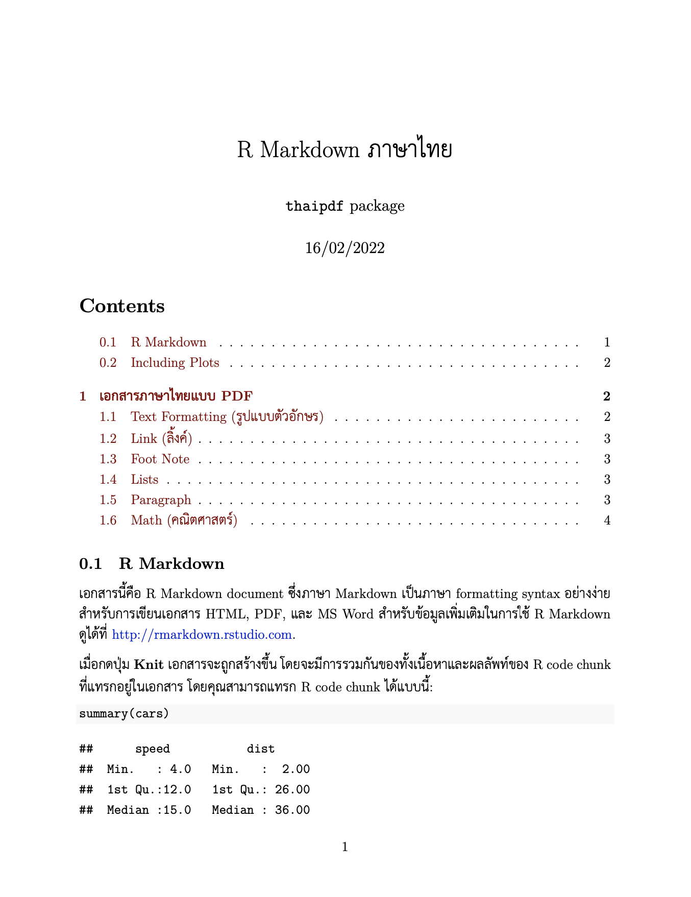
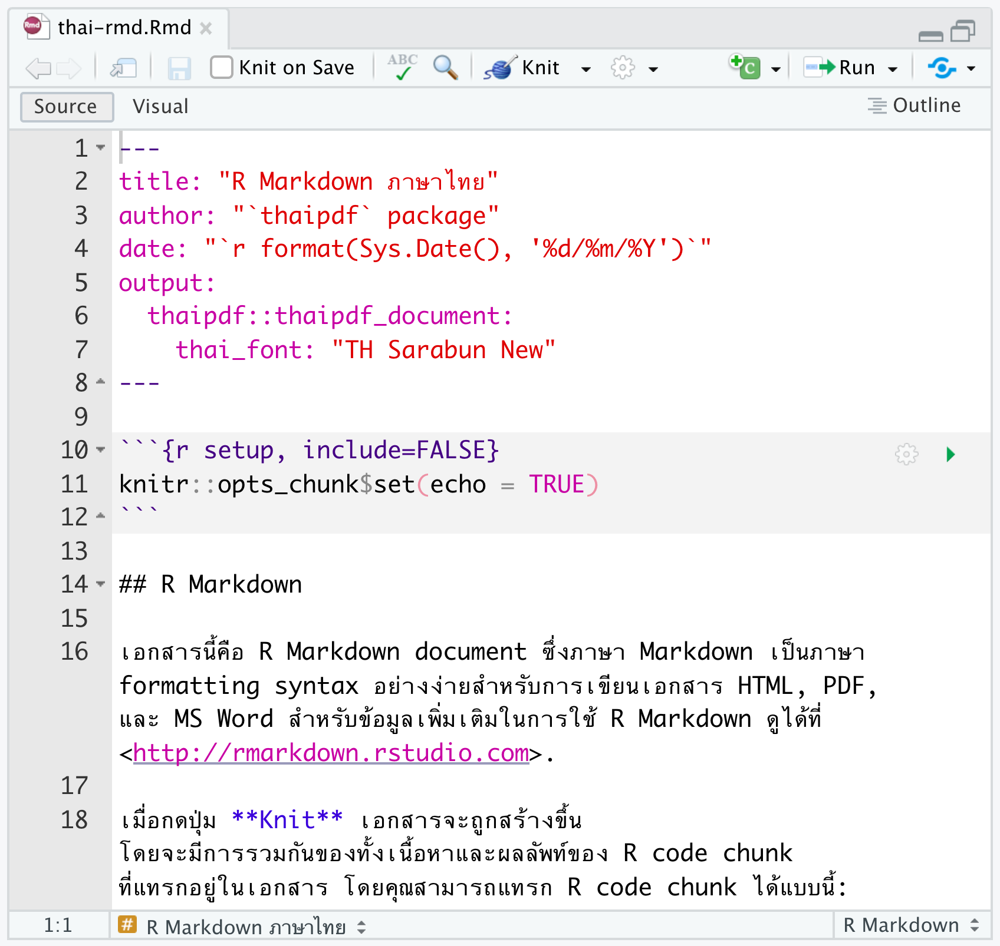

R package üì¶ ‡∏ä‡πà‡∏߇∏¢‡∏™‡∏£‡πâ‡∏≤‡∏á PDF document ‡∏à‡∏≤‡∏Å R Markdown ‡∏ó‡∏µ‡πà‡πɇ∏ä‡πâ ‡∏†‡∏≤‡∏©‡∏≤‡πч∏ó‡∏¢ üáπüá≠
| 1 | 2 |
|---|---|
|  |
Goal
R package ‡∏ô‡∏µ‡πâ‡∏ä‡πà‡∏߇∏¢‡∏™‡∏£‡πâ‡∏≤‡∏á PDF ‡πć∏õ‡πá‡∏ô‡∏†‡∏≤‡∏©‡∏≤‡πч∏ó‡∏¢ üáπüá≠ ‡∏à‡∏≤‡∏Å R Markdown ‡πч∏î‡πâ‡πLJ∏î‡∏¢‡∏á‡πà‡∏≤‡∏¢
ผู้เริ่มต้น สามารถ knit เอกสาร R Markdown เป็น PDF ได้ทันทีโดยใช้ template ที่มีให้ และ
ผู้ที่ใช้งาน LaTeX เป็น สามารถเรียกใช้ LaTeX preamble ที่มีการตั้งค่าภาษาไทยมาให้แล้ว มา customize เพิ่มเติมอย่างที่ต้องการได้
โดยจะพยามคง option ต่างๆ ของ R Markdown ไว้ให้ได้มากที่สุด ซึ่งสามารถส่งต่อ YAML parameter ไปยัง R Markdown หรือ bookdown ได้ด้วย
Install
Install thaipdf: ติดตั้ง development version ของ thaipdf จาก GitHub ด้วย:
# install.packages("remotes")
remotes::install_github("Lightbridge-KS/thaipdf")Install XeLaTeX และ LaTeX package ที่จำเป็นสำหรับการใช้ภาษาไทย อาจทำได้อย่างง่ายโดยใช้ {tinytex} R package:
install.packages("tinytex")
# For using R Markdown
tinytex::install_tinytex()
# Install LaTeX PKG required by `thaipdf`
tinytex::tlmgr_install(c(
"fontspec", "ucharclasses", "polyglossia"
))Check font: ตรวจสอบว่าในเครื่องมีฟอนท์ TH Sarabun New ถ้าไม่มีให้ติดตั้งด้วย (เนื่องจาก thaipdf ใช้ font นี้เป็นตัวหลัก)
Usage
วิธีใช้ที่ง่ายที่สุด คือสร้าง R Markdown ที่รองรับภาษาไทยจาก template ที่ package นี้มีให้
ถ้าท่านใช้ RStudio ให้ไปที่ File -> New File -> R Markdown... -> From Template

เลือก template Thai PDF R Markdown หรือ Thai PDF Bookdown จากเมนู
กดปุ่ม OK จะเปิดไฟล์ R Markdown template ที่รองรับกับภาษาไทย

จากนั้นกดปุ่ม Knit (cmd/ctr + shift + K) ได้เลย จะได้เอกสารเป็น PDF ภาษาไทยที่มี เนื้อหา โค้ด และ กราฟ อยู่รวมกัน

ตัวอย่าง R Markdown PDF ภาษาไทย